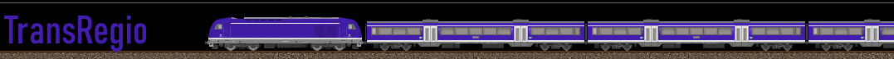
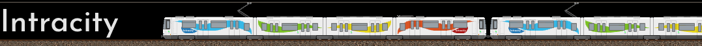

Services de la MLTC Railways
Lors de sa création en 2001, la MLTC structure son offre autour de quatre grands
services ferroviaires, hérités des trois compagnies fondatrices (WME, CCFM, MSER) :
-
InterCity (IC)
Service de grandes lignes regroupant les principales liaisons nationales et
transfrontalières. Il s’appuie sur l’héritage des services Fernzug de la WME,
Horizon de la CCFM et Mainline de la MSER, avec des trains rapides,
généralement sans arrêt intermédiaire majeur, assurant la connexion entre les
grandes villes du Mathlyens.
-

TransRegio (TR)
Service régional classique desservant les villes moyennes, bourgs et zones
rurales, avec des arrêts fréquents. Ce service assure une interconnexion
fluide avec les services longue distance.
-
HighSpeed (HS)
Trains à grande vitesse au niveau national et international. Ce service
provient de la fusion des services Blitz (WME) et Turbo (CCFM).
-
NightLine (NL)
Trains de nuit reliant les capitales et grandes villes sur des distances
longues, à l’échelle nationale comme européenne. Ces trains proposent
différentes gammes de confort, du siège inclinable aux cabines couchettes.
Refonte des services - 2012
Face à l’extension progressive du réseau, à l'évolution des besoins en mobilité et à
l’hétérogénéité croissante des territoires desservis, la MLTC engage en 2012 une
vaste refonte de ses services. Cette réorganisation vise à clarifier l’offre, à
renforcer la lisibilité pour les usagers et à mieux intégrer les réalités urbaines,
périurbaines et transnationales du Mathlyens.
Dès lors, les services MLTC sont restructurés en deux grandes catégories : services
urbains & suburbains, et services nationaux & transfrontaliers.
Services urbains & suburbains
-
Frail
Service assurant une desserte cadencée et dense des grandes métropoles
françaises entre les centres-villes et leurs périphéries, dans une logique
de RER.
-
Urbahn
Service assurant une desserte cadencée et dense des grandes métropoles
allemandes, autrichiennes et suisses entre les centres-villes et leurs
périphéries, dans une logique de RER.
-

Intracity
Service ferroviaire intra-urbain destiné à renforcer les liaisons internes
d’une même ville ou entre communes limitrophe. Il s’appuie sur du matériel
léger adapté à une desserte fine.
Services nationaux & transfrontaliers
-
TransRegio (TR)
Maintenu dans la nouvelle grille, ce service régional assure la continuité du
maillage territorial, connectant villes secondaires et zones rurales aux
grandes lignes.
-
Xpress
Nouveau nom des anciens services InterCity, Xpress assure les liaisons
rapides entre grandes villes d’un même pays. Certains services Xpress
franchissent les frontières pour relier des villes frontalières.
-
HighSpeedXpress (HSX)
Successeur du service HighSpeed, HSX regroupe les trains à grande vitesse
nationaux et internationaux. Le nom du service s’inspire de la marque Xpress,
dont il reprend l’identité visuelle et les codes graphiques, afin d’assurer
une cohérence avec l’offre rapide de la MLTC.
-
Vivarail
Nouveau service lancé lors de la refonte, Vivarail assure les liaisons grandes
lignes internationales. Il propose un confort accru pour les longs trajets,
avec des services à bord renforcés.
-
Nocrail
Successeur du service NightLine, Nocrail reprend les trains de nuit de la
MLTC. Il assure des connexions nocturnes à l’échelle nationale et européenne.
Concernant le transport de marchandises, celui-ci est confié à la Mathly Cargo Company (MLCC), la filiale fret du groupe MLTC. En 2015, afin de mieux répondre aux besoins des territoires et d’optimiser l’utilisation des lignes secondaires, la MLCC lance un service spécifique dédié aux dessertes locales : RegioCargo. Ce service vise à maintenir une activité fret de proximité sur des axes secondaires, souvent délaissés par les grands opérateurs nationaux, et à renforcer l’intégration logistique des régions au réseau principal.
A venir : Présentation Livrée MLCC, RegioCargo et MLTC Infrastructures